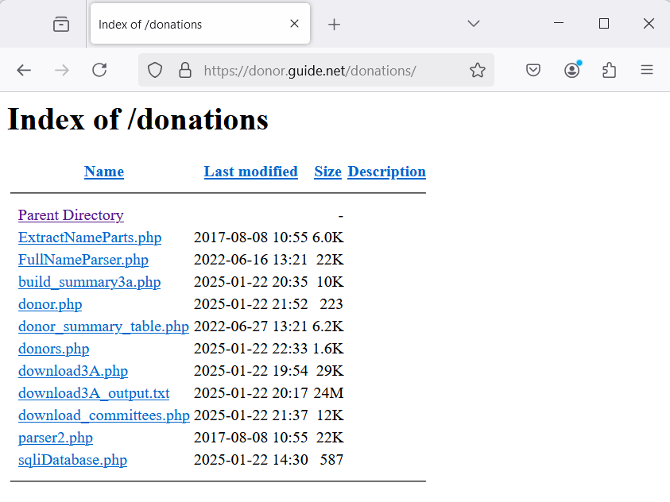

Dr. Halverson has a HI Voter web application that allows subscribers, mostly political candidates, to search for voters in their district. The application is built using PHP & MySQL on a Linux/Apache stack (LAMP). He would like the OpenData Hawaii retrieval to be automated and scheduled for the following datasets:
- Candidate Committees
- Candidates
- Non-Candidate Committees
- Candidate Contributions
- Non-Candidate Contributions
In addition, there is a summarization process that needs to be updated. This summarization is done to allow the Donors and Donor pages to load quickly.

Sample of Donors listing

Database Tables

Index of Donations folder